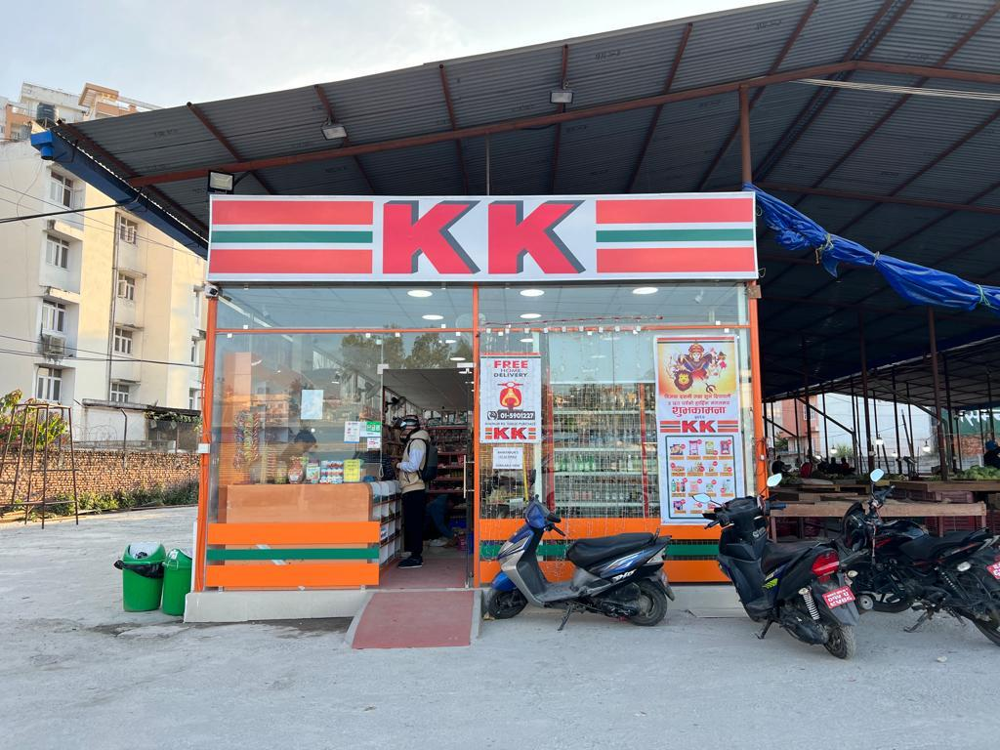

Real Story · 中文
在 Nepal 路上，突然看到 Malaysia 的日常。
05/12/2023，我离开 Daman，继续往 Kathmandu 的方向移动。 路上突然看到一个让我很惊讶的招牌：KK Mart。
那不是一间“看起来像 KK Mart 的店”，而是真的 KK Mart。 一个我在 Malaysia 很熟悉的品牌，竟然出现在 Nepal 的路边。
我当然特地停下来。 我走进去和员工聊天，他们说这间店是 Malaysia boss 经营的。 更有趣的是，里面的摆设方式也几乎和 Malaysia 的 KK Mart 一样。
那一刻有一种很奇妙的感觉： 店外是 Nepal 的山路，店里却像 Malaysia 的便利店。 好像世界突然折了一下，把一个熟悉的日常放在陌生的地方。
这不是大事件。 但旅程常常就是由这种小小的认出组成的。 在远方看见熟悉的东西，心会突然笑一下。
English Memory Summary
A Malaysian echo in Nepal.
On 05/12/2023, while driving from Daman toward Kathmandu, Tuzi suddenly saw a KK Mart by the road. It was not just a similar convenience store, but a familiar Malaysian brand appearing quietly in Nepal.
She stopped on purpose and spoke with the employees. They told her the shop was operated by a Malaysian boss. Even the internal arrangement felt almost exactly like the KK Mart she knew from Malaysia.
It was a small discovery, but it created a strange and warm feeling: Nepal outside, Malaysia inside.
Heart Statement
有时候，异乡会突然给你一个熟悉的招牌。
那不是景点，也不是奇迹。 只是一个 KK Mart。
可是在 Nepal 的路上看到它， 我突然觉得 Malaysia 也跟着我走到这里了。
Sometimes home does not appear as a place. It appears as a small familiar sign by the road.